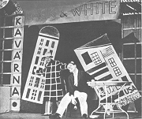
Hoffmeister: Nevěsta
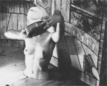
„Kulisa" z Bretonovy a Aragonovy surrealistické hry Poklad jezuitů
|
AVANTGARDNÍ DIVADLO
Avantgardní divadlo záměrně popíralo tradiční inscenační postupy. Hlavní slovo v něm měl režisér, který často zásadně upravoval dříve nedotknutelný dramatický text, soustředil se na práci s herci a spojoval všechny divadelní prostředky, aby dosáhl kýženého účinku. Jednotlivé avantgardní směry měly svou obdobu také na jevišti. Existovalo divadlo i drama dadaistické, futuristické, expresionistické, surrealistické nebo poetistické.
V avantgardním divadle mizí propast mezi jevištěm a hledištěm. Scénografie se stává svébytným uměním. Tvůrci kulis, kostýmů a rekvizit dávají volný průchod své fantazii. Celá výprava se tak k ději hry vztahuje jen velmi volně. Vše na jevišti je ale uspořádáno přísně účelně. Atmosféru podtrhuje osvětlení a důmyslná práce se stíny, která je pro avantgardní tvorbu typická. Režiséři využívali fotografické projekce. Divadelní inscenační postupy ovlivnil i film.
Průkopníkem avantgardního divadla byl Bertolt Brecht, Vsevolod Mejerchold nebo Antonin Artaud. Předním dramatikem byl i Guillaume Apollinaire. V Čechách byly nejvýznamnějšími scénami Osvobozené divadlo a D 34. Avantgardní divadelní hry psali Voskovec s Werichem, Vančura nebo Nezval. Z režisérů vynikali především K.H.Hilar, E.F.Burian, Jindřich Honzl nebo Jiří Frejka.
|
Fotografie a film
Avantgardní tvůrci obrátili svou pozornost také k fotografii a filmu. Díky nim se z těchto technických vymožeností stalo opravdové umění. Ve Francii působil avantgardní režisér René Clair [klér] (Pod střechami Paříže, Milion), v Rusku Sergej Ejzenštejn (Křižník Potěmkin, Deset dní, které otřásly světem, Ivan Hrozný) a v Čechách Gustav Machatý (Erotikon, Extáze).
Které divadelní hry napsal Nezval a Vančura?
|
Alfred Jarry (1873-1907)
Francouzský spisovatel Alfred Jarry [žari] bývá považován za předchůdce avantgardního divadla a průkopníka absurdního dramatu. Napsal divadelní hry Ubu králem (Ubu paroháčem), Ubu spoutaný, Ilustrovaný almanach otce Ubu, Absolutní láska a Ubu z vršku, prózy Messalina nebo Skutky a názory doktora Fustrolla, patafyzika a román Nadsamec. Zemřel v naprosté chudobě.
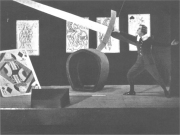
Představení Ubu králem inscenované v Osvobozeném divadle
|
Alfred Jarry: Ubu králem
Ubu králem je Jarryho první hra, ve které vystupuje otec Ubu, snůška těch nejhorších nectností. Je to sprosťák, nevzdělanec a zbabělec, který touží po moci. Obsadí Polsko, kde se velmi tvrdě vypořádá se šlechtou i úředníky, ale po neúspěšném útoku na Rusko se musí stáhnout zpět do ústraní.
Jarry napsal první verzi hry Ubu králem už na lyceu (1888), vzorem pro titulní postavu byl prý dramatikův profesor fyziky. Původně byla tato satira určena pro loutkové divadlo. Premiéra se uskutečnila až roku 1896 a vzbudila odpor diváků, protože hra začínala slovem „hovnajs“ a pokračovala vodopádem sprosťáren z úst otce Ubu.
|
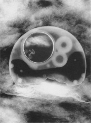
Heisler: Nadsamec
V čem Jarry navazuje na poetiku loutkového divadla?
Charakterizuj postavu otce Ubu.
Zaujala tě Jarryho hra? Proč?
|
Guillaume Apollinaire
(1880-1918)
Francouz Guillaume Apollinaire [gijóm apolinér] bývá nejčastěji považován za kubofuturistu. Napsal básnické sbírky Alkoholy (Pásmo) a Kaligramy,
prózy Zahnívající kouzelník, Kacíř a spol. (Pražský chodec) nebo Ubrousek básníků, román Zavražděný básník a drama Prsy Tiresiovy.
|
Guillaume Apollinaire: Prsy Tiresiovy
Divadelní hra Prsy Tiresiovy se odehrává v exotickém Zanzibaru. Na samém začátku se dívka Tereza vzdává své ženské role. Konečný přerod této emancipované feministky symbolizují odlétající balonky, ve které se proměnila její prsa. Tereza se stává mužem Tiresiem a opouští svého manžela, kterému se během jednoho dne narodí 40 050 dětí. Apollinairova komedie postrádá tradiční děj, dramatický konflikt i psychologii postav. Jde spíše o volný sled klaunérií a surreálných výjevů.
|
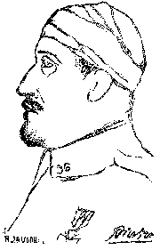
Pablo Picasso: Apollinaire
V čem spočívá novátorství Apollinairovy hry?
Jak se liší od tradičních her, například realistických?
|
Bertolt Brecht (1898-1956)
Německý divadelní reformátor Brecht musel jako komunista emigrovat před nacistickým režimem. Roku 1933 se přes Československo a Dánsko dostal až do USA. Po válce se vrátil zpátky do Berlína. Podle Žebrácké opery Johna Gaye napsal hru Třígrošová opera. Dalšími významnými dramaty jsou Život Galileiho, Strach a bída Třetí říše, Kavkazský křídový kruh (aktualizace starozákonního příběhu o Šalomounovi, který rozsoudil spor dvou žen o dítě) a Matka Kuráž a její děti. Teoretické práce vyšly v knihách O experimentálním divadle nebo Malé divadelní organon.
|
Bertolt Brecht: Matka Kuráž a její děti
Divadelní hra Matka Kuráž a její děti vychází z Grimmelshausenova pikareskního románu Poběhlice Kuráž. Děj se odehrává v době třicetileté války. Markytánka přezdívaná Matka Kuráž táhne se svými dětmi vůz plný zboží za švédským vojskem a využívá válečných konfliktů pro obchod a zajištění vlastní existence. Dočasné příměří pro ni znamená finanční problémy a obnovení bojů vítá s nadšením. Válka ji sice živí, ale zároveň Matku Kuráž připraví o všechny děti. V zajetí umírá její syn Švejcar, druhý syn Eilif narukuje do vojska, proslaví se jako hrdina, ale nakonec padne v boji. Dceru Katrin zastřelí vojáci. Osamělá a zchudlá Matka Kuráž táhne svou káru dál. Nepochopila, že je válka jejím nepřítelem, ne živitelkou.
Brecht propagoval tzv. epické divadlo. Jeho jádrem bylo neustálé zcizování, které mělo divákovi připomínat, že divadlo není iluzí, ale je nutno se na něj dívat s racionálním odstupem. Brecht jako režisér i dramatik neuznával snahy vtáhnout diváka do děje. Důležitější podle něj bylo poznání pravdy. Do představení integroval hudbu, zpěv, osvětlení i filmové záběry.
|
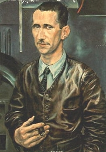
Bertolt Brecht
Charakterizuj jednotlivé postavy Brechtovy hry.
Srovnej Brechtovu adaptaci s barokní předlohou.
|
Antonin Artaud (1896-1948)
Francouzský divadelní teoretik Antonin Artaud [antonen arto] se hlásil k surrealismu. Trpěl duševní poruchou a několikrát byl hospitalizován v psychiatrické léčebně. Během pobytu v Mexiku ho zaujaly indiánské rituály. V dramatu neuznával psychologii a zábavnost. Propagoval tzv. divadlo krutosti a totální divadlo. Odmítal uznávané hodnoty, oslavoval zlo a snažil se uvrhnout diváky i herce do jakéhosi transu. Velký důraz kladl na scénické provedení her.
Napsal manifest Divadlo krutosti nebo pojednání Divadlo a jeho dvojenec.
|
Antonin Artaud: Kruté divadlo
Artaud napsal několik manifestů, ve kterých se pokusil shrnout své názory na divadlo a jeho složky. Stať Kruté divadlo (Divadlo krutosti) dobře vystihuje, v čem spočívalo jeho novátorství. Ve své době zůstal Artaud nepochopen, stejně jako řada dalších avantgardních umělců.
|
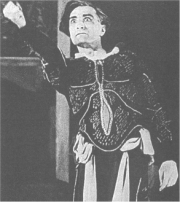
Artaud jako herec ve vlastní inscenaci Cenciové
Co nového chtěl Artaud vnést do divadla?
Souhlasíš s jeho koncepcí? Proč?
|
Osvobozené divadlo
Osvobozené divadlo vzniklo roku 1925 jako součást Devětsilu. Původně šlo o režisérské divadlo E.F.Buriana, Jiřího Frejky a Jindřicha Honzla, který časem oba kolegy vypudil. Publikum ale o avantgardní hry nestálo. Změna nastala až angažováním komiků Voskovce a Wericha. Tito spolužáci z práv změnili Osvobozené divadlo ve vlastní autorskou scénu. Společně napsali řadu her, ve kterých většinou hráli obyčejné „muže z lidu“ s komickými jmény. Původní hříčky typu Vest Pocket Revue brzy vystřídaly sociální a protifašistické satiry jako Caesar (Terentius Bulva a Titus Papulus), Osel a stín (Nejezchlebos a Skočdopolis), Kat a blázen (Radúzo a Mahuleno), Balada z hadrů (Georges a Jehan) nebo Pěst na oko. Roku 1938 bylo divadlo zavřeno cenzurou.
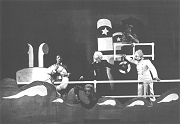
Jiří Voskovec (1905-1981)
Voskovec (Wachsmann) studoval na lyceu ve francouzském Dijonu. Za účinkování v němém filmu Pohádka máje byl vyloučen z Devětsilu. Roku 1939 s Werichem emigrovali do USA, kde psali tzv. černé čtvrthodinky pro české vysílání BBC a zahráli si i na Broadwayi. Po roce 1848 Voskovec znovu emigroval na Západ. Napsal knihu Klobouk ve křoví a účinkoval v několika hollywoodských filmech, např. Dvanáct rozhněvaných mužů.
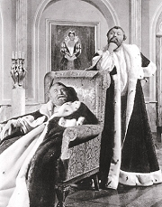
Jan Werich v dvojroli pohádky Císařův pekař – Pekařův císař, která vychází ze hry Golem
Jan Werich (1905-1980)
Werich po roce 1948 zůstal v Československu. Přestože nebyl miláčkem režimu, mohl účinkovat ve filmech Byl jednou jeden král, Císařův pekař – Pekařův císař, Až přijde kocour nebo Pan Tau. Přeložil do češtiny muzikál Divotvorný hrnec a spolu s Miroslavem Horníčkem znovu uvedl na scénu některé hry Osvobozeného divadla v Divadle satiry (Divadlo ABC). Napsal knihy Italské prázdniny nebo Fimfárum.
|
Voskovec a Werich: Vest Pocket Revue
První hru uvedli Voskovec s Werichem roku 1927. Šlo o dadaistickou hříčku Vest Pocket Revue plnou absurdních rozhovorů, parodií a jazykového humoru. Vášnivý sběratel fotografií rozzuřených lidí Jossek touží po fotce známého spisovatele a kliďase Kvidona. Najme si Publia Ruku a Sempronia Housku, kteří Kvidona pronásledují do Paříže, New Yorku a Lhasy.
Název hry vychází z etikety zápalek, na kterých byla vymalována silueta Hradčan. Autoři hry ji zvětšili a využili jako pozadí pro scény, které se odehrávaly v Praze.
Voskovec a Werich: Pěst na oko aneb Caesarovo finále
Poslední hra, kterou stačili Voskovec s Werichem uvést před zavřením Osvobozeného divadla roku 1938, Pěst na oko aneb Caesarovo finále je volným sledem apokryfů. Na „pravou míru" se zde uvádí Odysseova lest v Trojské válce, objevení Ameriky nebo Caesarova smrt. Autoři ukazují, že skutečnou zásluhu na chodu dějin neměly výjimečné osobnosti, ale obyčejní lidé s přízemními problémy.
Písně Voskovce a Wericha
Voskovec s Werichem do svých her původně zařazovali zahraniční šlágry, na které psali české texty. Od roku 1929 ale začali spolupracovat s hudebním skladatelem Jaroslavem Ježkem a společně vytvořili řadu nezapomenutelných písní. Tito umělci tvořili autorské jádro Osvobozeného divadla. Režie se většinou ujímal Jindřich Honzl a baletní čísla předváděly Girls choreografa Joe Jenčíka.
Jan Werich: Fimfárum
Kniha veselých pohádek a moderních adaptací klasických pohádkových námětů vyniká hlavně jazykovým humorem. Najdeme zde příběhy Královna Koloběžka První, Lakomá Barka, Tři veteráni nebo Fimfárum.
|
Forbíny (předscény)
Aby mohli oba klauni reagovat na aktuální události, zařazovali do svých představení tzv. forbíny (předscény). Když se měnila scéna mezi jednotlivými dějstvími, vystoupili před oponu a sehráli zde krátký improvizovaný dialog, který se často vůbec netýkal hlavního děje hry.
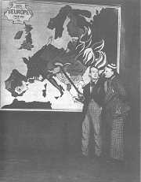
Předscéna ze hry Caesar (1932)
Co všechno se paroduje v ukázkách z her Voskovce a Wericha?
Které další hry Voskovce a Wericha znáš? O čem pojednávají?
Ve kterých filmech V+W hráli?
Na čem je založen humor Voskovce a Wericha?
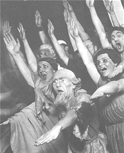
Zfanatizovaný dav ve hře Osel a stín
Které z uvedených písní lze označit za satirické? Čím se zabývají?
Zjisti, ve kterých hrách zazněly.
V čem se liší písňový text od básně?
Co je refrén?
Které další písně z Osvobozeného divadla znáš?
Jaké byly životní osudy Jaroslava Ježka?
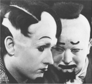
Voskovec a Werich
Co je fimfárum?
Které pohádky z Werichovy knihy umíš převyprávět?
Ze kterých pohádek jejich autor vycházel? Srovnej původní verzi s Werichovou.
Znáš jejich filmové adaptace? Kdo je natočil? Srovnej je s Werichovým textem.
Na čem je založena hříčka Chlap, děd, vnuk, pes a hrob?
Pokus se napsat stejným způsobem kratičký text.
|
Emil František Burian
(1904-1959)
E.F.Burian se narodil v Plzni a zemřel v Praze. Pracoval jako režisér, byl i významným hudebním skladatelem. Spoluzakládal Osvobozené divadlo a Divadlo Dada (Moderní studio). Roku 1933 založil družstevní divadlo D 34, tzv. Déčko. Roku 1941 bylo jeho divadlo zavřeno a E.F.Burian putoval do koncentračního tábora. Po válce své divadlo obnovil, ale avantgardních experimentů se zřekl a stal se komunistickým funkcionářem v armádě. E.F.Burian psal básně – Idioteon, Viděno slzami, písně – Chlupatý kaktus, Coctaily i povídky – Osm odtamtud. Složil řadu avantgardních oper – Bubu z Montparnassu, Před slunce východem, Maryša a napsal knihy Jazz, Černošské tance.
|
E.F.Burian: D 34 až D 42
Číslice v názvu Burianova Déčka se měnila každý rok a označovala letopočet konce divadelní sezony. Během své existence bylo divadlo D 34 až D 42 (1933-1941) nejvýbojnější avantgardní scénou v Čechách. Režisér E.F.Burian usiloval o divadlo syntetické a poetické. Snažil se propojit filmovou projekci, osvětlení a další scénické prvky do lyrického celku. Pro své divadlo dramatizoval prozaická i básnická díla, například Máchův Máj, Dykova Krysaře, Haškova Švejka nebo biblickou Píseň písní. Uvedl také Nezvalovu hru Manon Lescaut nebo představení na motivy barokních lidových her a sbírek lidové slovesnosti. Sborovou recitaci měl na starosti tzv. voiceband.
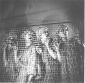
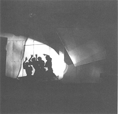
Inscenace Máchova Máje v Burianově divadle D 35
|
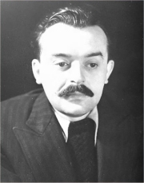
E.F.Burian
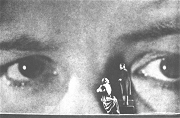
D 36: Wedekindovo Svěcení jara
|
Internetové stránky
Werich: Fimfárum
Werichovci, sdružení
Konzervatoř Jaroslava Ježka, Praha
Voskovec a Werich, písně
Klimeš: Císařův pekař – Pekařův císař, článek
Kovář: Jiří Voskovec, článek
Černý: Jiří Voskovec, článek
Exkurze
Modrý pokoj, Památník Jaroslava Ježka, Kaprova 10, Praha 1
Filmy
Extáze, režie G.Machatý
Deset dní, které otřásly světem, režie S.Ejzenštejn
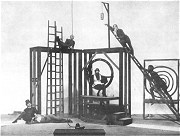
Konstruktivistická scéna
|
Doporučená četba
Artaud, Antonin: Texty (2 svazky)
Brecht, Bertolt: Domácí postila, Praha 1963
Brecht, B.: Sto básní, Praha 1959
Brecht o realismu, Praha 1969
Dílo Jaroslava Seiferta 2, Akropolis, Praha 2002 (Apollinaire: Prsy Tiresiovy)
Dvořák, A.: Trojice nejodvážnějších, J.Honzl, E.F.Burian, J.Frejka, Praha 1961
Honzl, Jindřich: Moderní ruské divadlo, Praha 1928
Hry Osvobozeného divadla (5 svazků)
Jarry Alfred: Ubu, přel. Voskovec, Turek, Kra, Praha 1993
Just, Vladimír: Werichovo divadlo ABC, Brána, Praha 2000
Kopecký, Jan: Antonin Artaud – poslední z prokletých, Hermann a synové, Praha 1994
Martínek, K.: Mejerchold, Praha 1963
Mejerchold, V.E.: Přestavba divadla, Praha 1946
Muzika, František: Kresby, scénická a knižní tvorba, Odeon, Praha 1984
Obst, M., Scherl, A.: K dějinám divadelní avantgardy, Praha 1962
Pelc, Jaromír: Zpráva o Osvobozeném divadle, Práce, Praha 1982
Píša, Antonín Matěj: Divadelní avantgarda, Praha 1978
Spisy Bertolta Brechta (9 svazků)
Srba, Bořivoj: Poetické divadlo E.F.Buriana, Praha 1971
Tairov, A.: Odpoutané divadlo, Praha 1927
V & W neznámí (2 svazky), NFA
Voskovec, Jiří: Klobouk ve křoví, Praha 1965
Voskovec, Werich: Máme za to, Písňové texty, Československý spisovatel, Praha 1990
Werich, Jan: Fimfárum, Albatros, Praha 1992
|
Vypracuj písemný referát o některé z uvedených knih.
Zahrajte si avantgardní divadelní představení.
Srovnej avantgardní divadlo a drama s antickým, komedií dell’arte nebo orientálním divadlem.
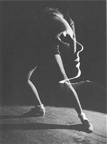
Hák: Tanečnice Nina Jirsáková
|
|